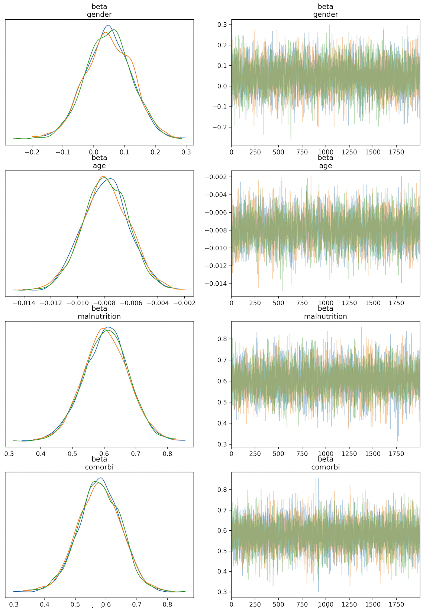
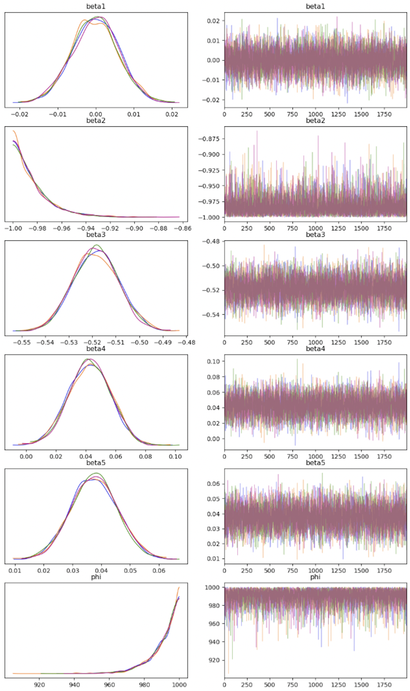
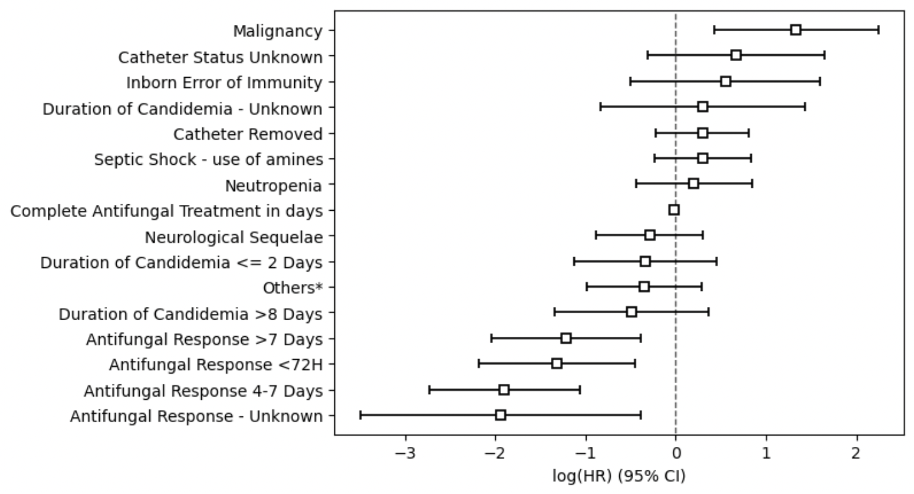
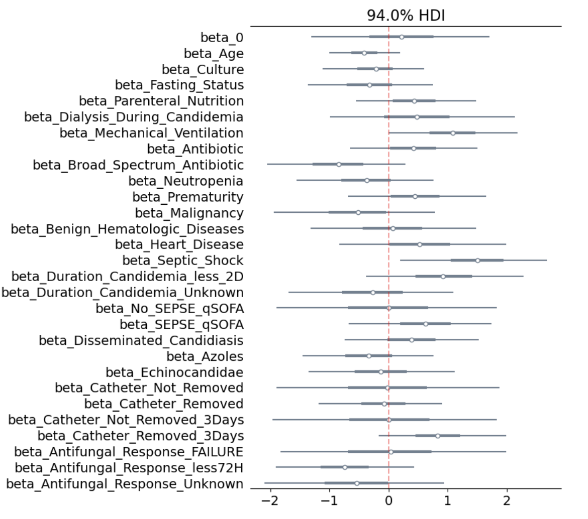

I always believed in the statement Sapere Aude presented by Immanuel Kant, a prestigious German philosopher from the Enlightenment, a statement intended to motivate people to always seek knowledge, being the direct translation 'dare to know'. As a researcher, curiosity must be the guide to think outside of the box and find new passions to dedicate time. Among my passions nowadays are providing machine learning algorithms with causal learning in order to provide more accurate answers for a medical decision-making; blending reinforcement learning with survival analysis techniques to determine prognostic factors; causal networks applied to survival data, among others.
I'm Diego Andrés von Borries Flores. I was born in Bolivia, but I have a strong connection with two countries that I love, Mexico and Brazil, the reason I'll explain you below. I'm a biomedical engineer who got passionated about the field of statistics and its junction with computer science, merging into a fascinating field that we know as data science. My journey took place back in 2015 when my path into the engineering world begun. I was accepted to be part of the biomedical engineering program at Universidad Politécnica de Pachuca, located in the city of Pachuca the capital of Hidalgo, one of the most relevant states from Mexico. The reason why I chose biomedical engineering was because I considered; and still considering, biomedical engineering as a game changer, a major that blends the field of engineering with the field of medicine, providing the professionals with a wide range of knowledge from multiple domains expanding the opportinity to act in multiple areas. Back in my years as an undergraduate student, from very early on my career I could experience firsthand the duties of a biomedical engineer by taking three different internships. The first internship consisted of 200 hrs of service supporting the maintenance division of a nephrology clinic called Centro Integral de Nefrología located in Pachuca, there I gained knowledge on the functionality of hemodialysis machine and the proper way to provide preventive and corrective maintenance.
Read MoreApplication of rigorous descriptive and inferential statistics methods conducted in Python to uncover meaningful patterns hidden in complex datasets, including exploratory data analysis to understand distributions, correlations, and outliers, as well as formal hypothesis testing to validate assumptions and support data-driven decision.
Implementation of machine learning techniques, such as regression, classification, and ensemble methods (e.g., random forests, gradient boosting), and neural networks to produce robust predictive models capable of handling complex, high-dimensional datasets and supporting data-driven forecasting and decision-making.
Application of Bayesian methodologies to classic statistical approaches in order to enhance the quality of the results. Bayesian framework has demonstrated its capabilities to success in scenarios where classical approaches provide unreliable results due to their strict assumptions or the lack of large datasets. I recently presented a study blending Bayesian framework with semiparametric transformation models to determine prognostic factors in cancer patients.
Design and implementation of ETL pipelines for the extraction, cleaning, and transformation of raw, unstructured datasets, ensuring data quality and consistency to support downstream statistical analysis and machine learning workflows.
Development of interactive dashboards and visual reporting tools using Plotly and Power BI, translating complex statistical and predictive model outputs into clear, accessible visuals that support monitoring, exploration, and data-driven decision-making for technical and non-technical stakeholders alike.
Translation of statistical and machine learning results into clear technical reports and actionable recommendations for research or business decision-making, along with private courses and mentoring in statistics, Python, and data science for individuals and teams looking to build their analytical skills.

The project focused on the implementation of a hierarchical Bayesian framework to three semiparametric transformation models, the analysis was based on a dataset of 862 cancer patients provided by the National Cancer Institute of Cancer (INCA) from Rio de Janeiro, Brazil. The purpose of the analysis was to determine prognostic factors that increased the risk to have of cancer.

Analysis conducted under a Bayesian approach applied to a traffic accident dataset of 645 minincipalities by year from the state of São Paulo, Brazil. The aim of this analysis was to find relevant insights from the dataset in order to promote the severities a trafic accident could reach, as well as the age group frequently involved in these situations.

Conducted an analysis applying survival analysis techniques, such as the proportional hazards regression model proposed by Cox to analyze 102 pediatric patients, under the age of 18, that had experienced episodes of candidemia fungos. The analysis intended to describe and highlight the factors that increased the risk of have from candidemia.

The present analysis focused to highlight the differences between the two approaches and determine the advantages of the Bayesian approach to enhance the analysis, resulting in more reliable outcomes. To conduct this analysis, the candidemia dataset was proposed, the analysis revealed the strengths of the Bayesian approach, producing relevant findings while the classical approach struggle to provide feasibles outcomes, presenting wide confidence intervals.